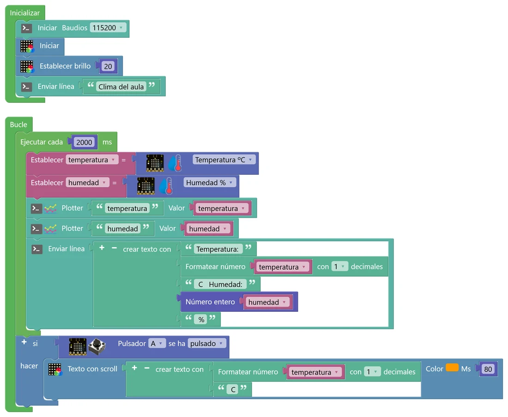
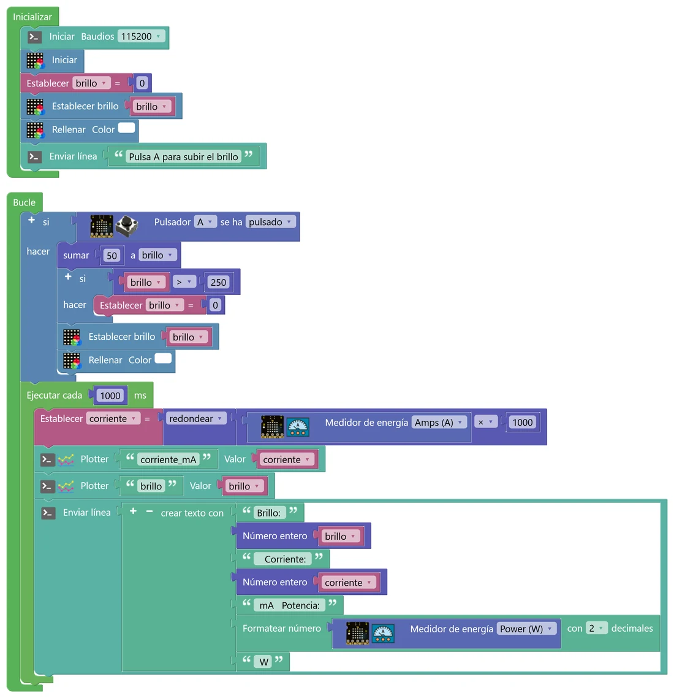
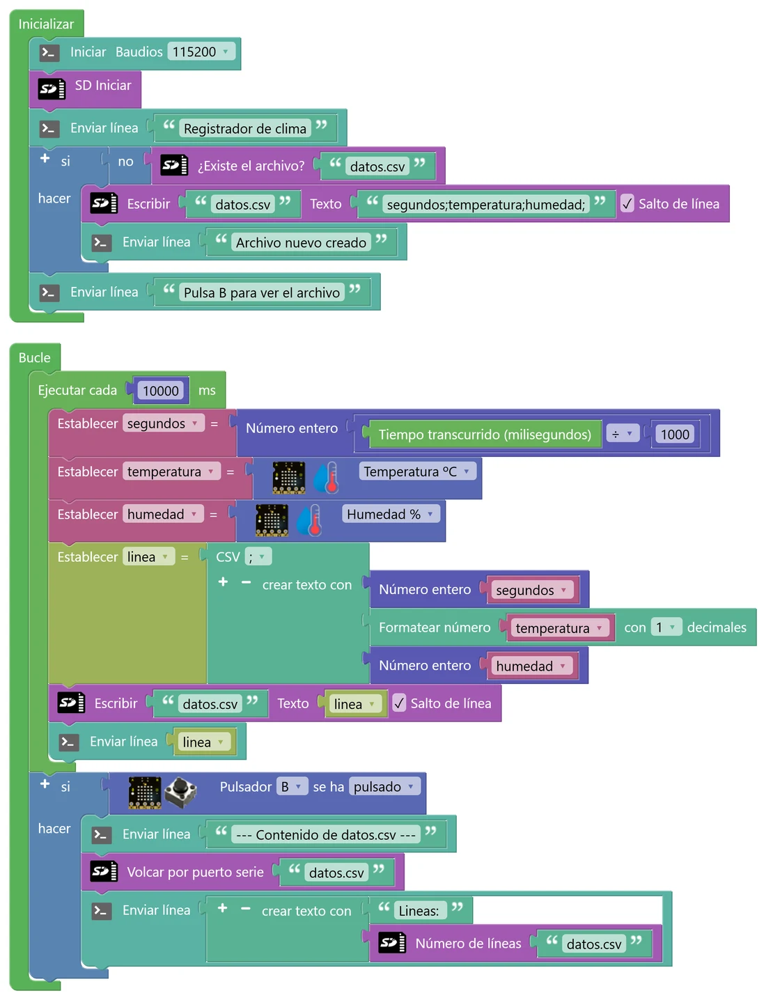

N8 Datos: medir, registrar y guardar
Hasta ahora la placa medía y reaccionaba al momento. En este nivel se convierte en un pequeño laboratorio: mide la temperatura y la humedad del aula, averigua cuánta energía gasta ella misma y guarda las medidas en una tarjeta microSD para que luego las analices en una hoja de cálculo. Y aprenderás el bloque que usan casi todos los programas de verdad: Ejecutar cada, que hace cosas cada cierto tiempo sin dejar la placa bloqueada.
🎯 Objetivo
- Leer el sensor de temperatura y humedad (AHT20) y el medidor de consumo de la placa.
- Repetir tareas cada cierto tiempo con Ejecutar cada y entender por qué es mejor que Esperar cuando la placa tiene que hacer varias cosas.
- Construir un registrador de datos: escribir líneas CSV en la tarjeta microSD.
- Llevar los datos a una hoja de cálculo, hacer una gráfica y sacar conclusiones.
🧠 Antes de empezar
La placa tiene tres piezas nuevas para nosotros, todas ya montadas (las viste en el N0):
| Pieza | Qué mide o hace | Bloque |
|---|---|---|
| AHT20 | Temperatura del aire (ºC) y humedad relativa (%). Se comunica con el ESP32 por el bus I2C, como el acelerómetro. | micro:STEAMakers › Sensores: el del termómetro, con el desplegable Temperatura ºC o Humedad %. |
| Medidor de consumo | La corriente que consume la placa (A). Con ella calcula la potencia (W) y va sumando la energía gastada (Wh). | micro:STEAMakers › Sensores: Medidor de energía, con A, V, W o Wh. |
| Ranura microSD | Guarda archivos en una tarjeta, como un pendrive diminuto. Está en la cara de atrás de la placa. | micro:STEAMakers › Tarjeta SD |
Esperar frente a Ejecutar cada
¿Recuerdas el metrónomo del N5, que a veces no hacía caso a los botones? Pasaba porque Esperar deja la placa parada: mientras espera, no mira nada más. El bloque Ejecutar cada (Tiempo) funciona de otra manera: en cada vuelta del Bucle mira el reloj interno de la placa y solo ejecuta lo que tiene dentro cuando ha pasado el tiempo indicado. El resto de vueltas lo salta, y el Bucle sigue girando a toda velocidad, atento a todo lo demás.
💡 Para entenderlo: el horno y el reloj de la cocina
Tienes un bizcocho en el horno y hay que mirarlo cada 10 minutos. Una forma es sentarte delante del horno y no moverte (eso es Esperar): si llaman al timbre, no abres. La otra es mirar el reloj de la cocina de vez en cuando mientras haces otras cosas y, cuando han pasado 10 minutos desde la última vez, abrir el horno (eso es Ejecutar cada). El reloj de la placa se llama millis: cuenta los milisegundos que han pasado desde que se encendió.
🐍 La misma idea en Python
import time ultima = 0 while True: ahora = time.time() if ahora - ultima >= 2: # ¿han pasado 2 s? ultima = ahora medir_y_enviar() mirar_botones() # siempre atento
🧩 En STEAMakersBlocks
En Tiempo está Ejecutar cada … ms, que hace todo eso en un solo bloque. Puedes poner varios en el mismo Bucle, cada uno con su tiempo: cada bloque lleva su propia cuenta.
En el mismo menú tienes Tiempo transcurrido (milisegundos): el valor de millis, por si quieres saber cuánto lleva encendida la placa.
🧩 Programa 1 · El clima del aula
Cada 2 segundos, la placa mide la temperatura y la humedad, las envía al Serial Plotter y escribe una línea en la consola. Y en cualquier momento, si pulsas A, la temperatura pasa por la matriz. Gracias a Ejecutar cada, el botón responde al instante.

🛠️ Móntalo paso a paso
- Crea las variables temperatura y humedad. En Inicializar: consola, matriz, brillo 20 y un mensaje.
- En Bucle, el bloque Ejecutar cada (Tiempo) con 2000 ms. Dentro: Establecer temperatura = sensor de temperatura y humedad (micro:STEAMakers › Sensores) con Temperatura ºC; lo mismo para humedad con Humedad %.
- Dentro del Ejecutar cada: dos Plotter y un Enviar línea con crear texto con: la temperatura con Formatear número a 1 decimal (Texto) y la humedad con Número entero (Matemáticas).
- Fuera del Ejecutar cada, pero dentro del Bucle: si se ha pulsado A → Texto con scroll (micro:STEAMakers › NeoMatrix) con la temperatura.
- ¿Qué temperatura y humedad hay en el aula? Compáralas con un termómetro de pared o con la previsión del tiempo. Si la placa marca más, ¿se te ocurre por qué? (Pista: toca el chip grande de la placa después de un rato funcionando.)
- Echa el aliento sobre la placa (o tápala con la mano un minuto). ¿Qué cambia más deprisa, la temperatura o la humedad? ¿Cuánto tarda en volver?
- Cambia el Ejecutar cada por Esperar 2000 al final del Bucle (o prueba el simulador). ¿Qué le pasa al botón A? Explícalo con el dibujo de arriba.
🧩 Programa 2 · ¿Cuánto gasta la matriz?
Un experimento de verdad: la matriz se enciende entera en blanco y cada pulsación de A sube su brillo 50 puntos (de 0 a 250, y vuelta a empezar). Cada segundo, la placa mide su propia corriente y la envía al plotter junto con el brillo. ¿Gasta más la matriz cuanto más brilla? ¿Cuánto?

🛠️ Móntalo paso a paso
- Variables brillo y corriente. En Inicializar: consola, brillo = 0, Establecer brillo con la variable brillo y Rellenar en blanco.
- En Bucle: si se ha pulsado A → sumar 50 a brillo (Matemáticas); otro si: si brillo > 250, brillo = 0; y otra vez Establecer brillo y Rellenar blanco para que se note el cambio.
- Ejecutar cada 1000 ms: corriente = redondear(Medidor de energía (A) × 1000). Así pasamos de amperios a miliamperios (mA), que son números más cómodos.
- Dentro del mismo Ejecutar cada: Plotter de corriente_mA y de brillo, y un Enviar línea con el brillo, la corriente y la potencia (Medidor de energía con W, a 2 decimales).
💡 Para entenderlo: corriente, potencia y energía
Piensa en un grifo. La corriente (amperios, A) es cuánta agua pasa por segundo. La potencia (vatios, W) es lo «fuerte» que está trabajando el aparato en ese momento: P = V × I, tensión por corriente. La placa funciona a 3,3 V, así que con 0,1 A la potencia es 3,3 × 0,1 = 0,33 W. La energía (vatios hora, Wh) es lo que se ha gastado en total, como el agua acumulada en el cubo: potencia × tiempo. Una bombilla de 10 W encendida 3 horas gasta 30 Wh. Es lo mismo que pone en la factura de la luz, pero en kWh (1 kWh = 1000 Wh).
- Completa una tabla brillo → corriente (0, 50, 100, 150, 200, 250) y haz la gráfica en una hoja de cálculo. ¿Sale una recta? ¿Cuánto gasta la placa con la matriz apagada?
- ¿Cambia la corriente si en lugar de blanco rellenas de rojo? ¿Por qué crees que pasa? (Pista: cada píxel lleva dentro tres LED.)
- ¿Nota algo el medidor cuando suena el zumbador? Añade un pitido al pulsar B y compruébalo.
- Calcula: si la placa funcionara todo el día con la matriz a brillo 250, ¿cuántos Wh gastaría? Usa tu medida de potencia.
🧩 Programa 3 · Registrador de datos en la microSD
Ahora la placa trabaja sola: cada 10 segundos mide y escribe una línea en un archivo, datos.csv, de la tarjeta microSD. Puedes dejarla toda una clase (o toda la noche con un cargador) y luego llevar el archivo a una hoja de cálculo. Al pulsar B, la placa vuelca el archivo entero por la consola.
Cada línea del archivo es una medida, con los datos separados por punto y coma. Así, al abrirlo en una hoja de cálculo, cada dato cae en su columna:
segundos;temperatura;humedad; ← cabecera (la primera vez)
10;23.4;56;
20;23.4;56;
30;23.5;57;

🛠️ Móntalo paso a paso
- Variables de número: segundos, temperatura y humedad. Y una de texto: linea («Crear variable… (Texto)» en Variables).
- En Inicializar: consola y SD Iniciar (micro:STEAMakers › Tarjeta SD). Después, un si con no ¿Existe el archivo? «datos.csv» (el «no» está en Lógica): si no existe, Escribir en «datos.csv» la cabecera segundos;temperatura;humedad; con «Salto de línea» marcado.
- En Bucle, Ejecutar cada 10000 ms. Dentro: segundos = Número entero(Tiempo transcurrido ÷ 1000) (Tiempo) y las lecturas de temperatura y humedad.
- Establecer linea = CSV (Texto, el bloque CSV con el separador ;) con tres elementos: segundos (Número entero), temperatura (Formatear número, 1 decimal) y humedad (Número entero). El + del bloque añade elementos.
- Escribir en «datos.csv» el texto linea y, para verlo, Enviar línea con linea.
- Fuera del Ejecutar cada: si se ha pulsado B → Volcar por puerto serie «datos.csv» y Enviar línea con el Número de líneas del archivo.
Del archivo a la gráfica
- Consigue el archivo. Opción A: desconecta la placa, saca la tarjeta y léela en el ordenador con un adaptador. Opción B: pulsa B, selecciona en la consola las líneas del archivo, cópialas y pégalas en un archivo de texto. Para practicar, también puedes usar el botón «Descargar datos.csv» del simulador.
- Ábrelo en una hoja de cálculo. En Hojas de cálculo de Google: Archivo › Importar › Subir, y como separador elige Personalizado con ;.
- Cuidado con los decimales. La placa escribe «23.4» con punto, y en España la hoja espera coma. Si los números salen raros (234, o alineados a la izquierda como si fueran texto), selecciona las columnas y usa Editar › Buscar y reemplazar para cambiar «.» por «,».
- Haz la gráfica. Selecciona las columnas y usa Insertar › Gráfico (de líneas). Pon título y nombre a los ejes con sus unidades.
- ¿Por qué el programa comprueba si existe el archivo antes de escribir la cabecera? ¿Qué pasaría sin ese «si» cada vez que reinicias la placa?
- Reinicia la placa (o pulsa «Reiniciar» en el simulador). ¿Qué les pasa a los segundos del archivo? ¿Qué problema da eso al hacer la gráfica? ¿Cómo lo arreglarías?
- Quita la tarjeta y enciende la placa. ¿Qué dice la consola? ¿Es verdad? ¿Cómo podrías avisar de que no hay tarjeta?
- Con una medida cada 10 s, ¿cuántas líneas tendrá el archivo después de una clase de 55 minutos? ¿Y de un día entero? Comprueba la primera con el «Número de líneas».
🚀 Retos
Alerta de confort
Cada 5 segundos, la placa comprueba si el aula está «cargada»: si la temperatura pasa de 27 ºC o la humedad pasa del 70 %, la matriz se pone roja, pita y escribe «Ventilad el aula»; si no, se queda verde. Busca en Lógica el bloque que une dos condiciones con «o». Justifica los umbrales que elijas.
Máximas y mínimas
Como el termómetro de una estación meteorológica: la placa guarda la temperatura más alta y la más baja desde que se encendió. Al pulsar A, la máxima pasa por la matriz en rojo; al pulsar B, la mínima en azul. Piensa bien con qué valor deben empezar las variables maxima y minima.
Media por minuto
Usa dos Ejecutar cada en el mismo Bucle: uno cada segundo, que mide la temperatura y la va sumando (y cuenta cuántas lecturas lleva); y otro cada minuto, que calcula la media, la guarda en la microSD (en un archivo «medias.csv» con cabecera) y vuelve a poner la suma y la cuenta a cero. Explica qué ventaja tiene guardar medias en lugar de todas las lecturas.
🔧 Bajo el capó: millis, la tarjeta SD y el medidor de energía
Así traduce STEAMakersBlocks el Ejecutar cada y la escritura en la tarjeta:
unsigned long task_time_ms = 0; // cuándo se ejecutó la última vez void loop() { if ((millis() - task_time_ms) >= 10000) { // ¿han pasado 10 s? task_time_ms = millis(); ... fnc_sd_print_esp32ks("datos.csv", s_linea, true); } } void fnc_sd_print_esp32ks(String _f, String _t, boolean _nl) { sd_file = SD.open("/" + _f, FILE_APPEND); // abrir para añadir al final if (sd_file) { sd_file.println(_t); sd_file.close(); // cerrar: queda guardado de verdad } }
⏱️ El truco de millis
millis() devuelve los milisegundos desde que arrancó la placa, en una variable unsigned long (un entero sin signo de 32 bits). Cada Ejecutar cada guarda en su propia variable (task_time_ms, task_time_ms2…) el momento de la última ejecución y resta. A los 49,7 días el contador da la vuelta y vuelve a 0, pero como se usa una resta con números sin signo, la cuenta sigue saliendo bien. Por eso se escribe millis() - anterior >= intervalo y no millis() >= anterior + intervalo.
La tarjeta se maneja por el bus SPI (pines 18, 19, 23 y 5) con la librería SD. El archivo se abre, se escribe y se cierra en cada línea: es algo más lento, pero si se va la corriente, lo escrito hasta ese momento ya está a salvo.
⚡ Cómo mide la energía
El medidor es un amplificador (INA180) que convierte la corriente de la placa en una tensión que lee el ADC en el pin 36. El bloque hace 500 lecturas seguidas, calcula la media para quitar ruido y la convierte en amperios con una recta de calibración: A = media × 0,000428 + 0,0436. La potencia es A × 3,3 (la tensión se toma fija, 3,3 V).
Para los Wh, STEAMakersBlocks crea una tarea que se ejecuta en paralelo (FreeRTOS) cada 100 ms y suma potencia × 0,1 s. Sumar poco a poco lo que pasa en cada instante se llama integrar; es lo mismo que hacía el giroscopio para calcular el ángulo en el N7.
🔎 ¿Lo has entendido?
Cuando termines, haz una captura con tu puntuación para el porfolio.
📁 Al porfolio
- Capturas de tus programas y del Serial Plotter del programa 1 cuando echas el aliento sobre la placa.
- Tu explicación, con tus palabras, de la diferencia entre Esperar y Ejecutar cada.
- La tabla brillo → corriente del programa 2, su gráfica y tus conclusiones.
- Un archivo CSV de al menos una clase, la gráfica hecha en la hoja de cálculo y un párrafo explicando qué se ve (¿cuándo sube la temperatura? ¿Y la humedad?).
- Tus respuestas a «Interpreta lo que ves».
- El reto que hayas hecho.
- Captura de tu resultado en «¿Lo has entendido?».